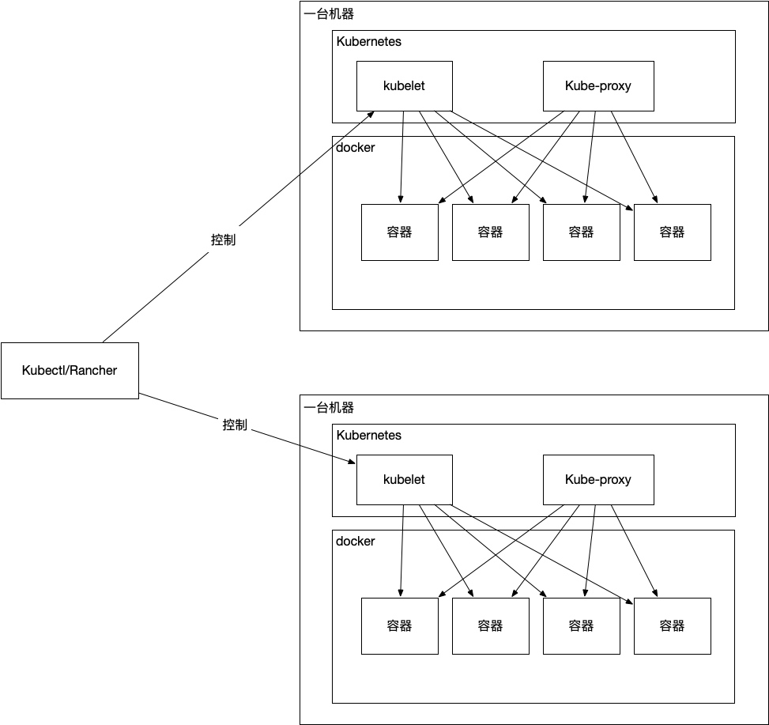
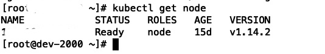
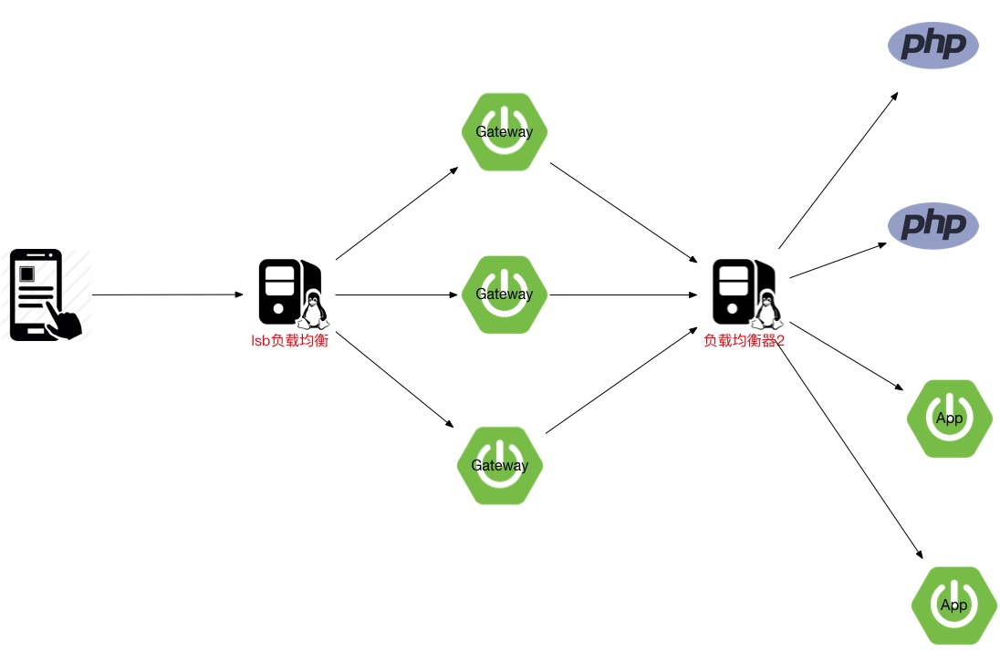

来自公司内部php的k8s落地实战总结分享，php的k8s微服务落地可以参考下面这个博客
k8s和docker关系图

关键点如下：
docker: 虚拟机软件
k8s: 管理docker里的这个虚拟机
k8s和docker都是linux下的软件，操作这个k8s和docker需要使用对应的kubectl和docker命令
docker
虚拟机软件，使用了和系统共用底层资源技术，所以虚拟化额外消耗的资源较低
目的
- 限制cpu、内存等资源占用
- 隔离和主机的环境，比如在虚拟机中安装卸载软件，不会影响主机安装的软件
要点：
- 端口输出(把这个docker虚拟机里的容器的端口输出到主机上)
- 把主机上的目录/文件挂载到虚拟机里
容器
名词：一个虚拟机
动词：运行中的虚拟机
Dockerfile: 这个容器的定义文件，比如使用的操作的系统，预先安装的软件等
docker从Dockerfile生成虚拟机，Dockerfile格式参考
FROM centos:7
MAINTAINER suxiaolin <dear.lin@live.com>
# 中国科技大学镜像
RUN curl -o /etc/yum.repos.d/CentOS-Base.repo https://lug.ustc.edu.cn/wiki/_export/code/mirrors/help/centos?codeblock=3
COPY etc/yum.repos.d/epel.repo /etc/yum.repos.d/epel.repo
COPY etc/yum.repos.d/xxx.repo /etc/yum.repos.d/xxx.repo
# 安装php
RUN yum install -y xxx-php70 xxx-php70-swoole
COPY . /app
WORKDIR /app
ENTRYPOINT ["xxx/php", "console", "serve"]
pod
一组容器
特点
- pod里的容器共享ip
deployment管理pod生命周期
- cpu使用限制
- 内存使用限制
- 什么时候算作容器可用（比如web服务某个接口可以访问了算可用）
- 容器更新策略
---
apiVersion: v1
kind: Service
metadata:
name: xxx
spec:
selector:
k8s-app: xxx
ports:
- protocol: TCP
name: http
port: 8080
targetPort: 8080
type: ClusterIP
---
apiVersion: apps/v1
kind: Deployment
metadata:
annotations:
deployment.kubernetes.io/revision: "2"
creationTimestamp: null
labels:
k8s-app: xxx
name: xxx
spec:
progressDeadlineSeconds: 600
replicas: 1
revisionHistoryLimit: 10
selector:
matchLabels:
k8s-app: xxx
strategy:
rollingUpdate:
maxSurge: 25%
maxUnavailable: 25%
type: RollingUpdate
template:
metadata:
creationTimestamp: null
labels:
k8s-app: xxx
name: xxx
spec:
containers:
- name: xxx
image: "#image#"
imagePullPolicy: Always
livenessProbe:
failureThreshold: 3
httpGet:
path: /status.html
port: 8080
scheme: HTTP
initialDelaySeconds: 10
periodSeconds: 5
successThreshold: 1
timeoutSeconds: 1
resources: {}
securityContext:
privileged: false
procMount: Default
terminationMessagePath: /dev/termination-log
terminationMessagePolicy: File
env:
- name: NACOS_HOST
value: https://nacos.banmahui.cn/
- name: NACOS_ENV
value: dev
- name: NACOS_DATAID
value: xxx
- name: NACOS_GROUPID
value: DEFAULT_GROUP
dnsPolicy: ClusterFirst
imagePullSecrets:
- name: aliyunregistrykey
restartPolicy: Always
schedulerName: default-scheduler
securityContext: {}
terminationGracePeriodSeconds: 30
namespace
一组pod
kubectl
k8s的api的命令行接口
查看节点
kubectl get node

查看pod
kubectl --all-namespaces get pod
rancher
k8s的ui管理界面，可以提高操作效率
- 可视化的yaml文件编辑器
- 监控集群cpu/内存状态
网关
使用java语言编写的zuul：https://github.com/spring-cloud/spring-cloud-netflix/tree/master/spring-cloud-netflix-zuul
使用zuul有以下考量
- java语言编写，便于在网关上添加逻辑
- 高性能，底层采用netty库通信，非阻塞io, 性能接近nginx，参考：http://blog.didispace.com/zuul-vs-nginx-performance/
也可以考虑使用nginx+lua的kong网关，但是lua的三方库没有java多
滚动更新
先启动新的pod，新pod达到可用状态后再停止旧的pod
失败容错
如果新的pod起不来，旧的pod不会被删除，旧的pod会继续提供服务
php微服务部署到k8s
方便的给应用动态增减cpu和内存等资源
架构图
k8s项目部署流程

网关流量入口

日志
背景：k8s集群环境下，容器启动所在的机器会根据k8s的调度发生改变，容器重启时，旧的容器会被完全移除
使用redis进行中专，然后使用中间件把这个redis里面的日志转到阿里云的日志服务里
后期也可以改成kafka或者阿里云的logtail/容器stdout收集等
链路
背景：服务很多的情况下，报错后很难定位问题，可视化的调用链路监控系统，可以提高排错的效率
使用符合opentracing标准的jaeger: https://www.jaegertracing.io/
这个jaeger可以把数据保存进elasticsearch里，可以在kibana里使用elasticsearch提供的搜索语法
配置中心
使用阿里巴巴开源的nacos，参考：https://nacos.io/en-us/
- 在项目启动时拉取配置文件
- 优雅不停机，定时拉取最新的配置文件（按需）
常用命令
生成k8s的yaml模版
kubectl run nginx --image=nginx --dry-run -o yaml
动态调整k8s的deployment实例数量
kubectl scale deployments/myapp --replicas=3
查看namespace列表
kubectl get namespaces
查看集群负载情况
kubectl top node
kubectl top pod
简写
namespaces -> ns
services -> svc
ReplicaSet -> rs
一些注意的点
- rancher的证书有效期默认1年，到期后需要续期（10年），参考：https://mp.weixin.qq.com/s/rvJSXue2a-rN2BdEFElMbA
参考资料
- https://jimmysong.io/kubernetes-handbook/concepts/
- https://medium.com/jaegertracing/jaeger-elasticsearch-and-kibana-7ecb846137b6
- https://instea.sk/2015/04/netflix-zuul-vs-nginx-performance/
- https://help.aliyun.com/document_detail/66658.html
- https://kubernetes.io/docs/concepts/workloads/controllers/deployment/
- https://jimmysong.io/kubernetes-handbook/appendix/docker-best-practice.html
- https://medium.com/jaegertracing/jaeger-elasticsearch-and-kibana-7ecb846137b6
持续更新...